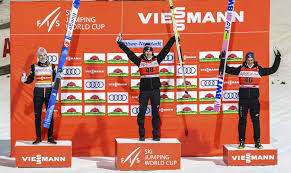

Kamil Stoch to jeden z najbardziej utytułowanych skoczków narciarskich w historii. Mistrz olimpijski i mistrz świata w skokach, dwukrotny triumfator Turnieju Czterech Skoczni i Pucharu Świata.

Urodził się 25 maja 1987 r. w Zakopanem, jest synem Bronisława, psychologa sądowego i Krystyny, która pracuje jako urzędnik. Kamil ma dwie starsze siostry – Annę i Natalię. Swoją przygodę z nartami rozpoczął już jako trzyletnie dziecko, zaczął skakać mając 9 lat. Ukończył Zespół Szkół Mistrzostwa Sportowego w Zakopanem i zdał maturę w 2006 r. Studiował również na krakowskiej Akademii Wychowania Fizycznego, którą ukończył w 2012 r. z tytułem magistra.
Jako mały chłopiec w wieku 4 lat oddawał pierwsze skoki na budowanych wraz z kolegami skoczniach narciarskich. Mając 8 lat rozpoczął treningi w rodzinnym LKS Ząb. Na początku trenował kombinację norweską, startował również w lidze szkolnej osiągając pierwsze sukcesy. Jako junior występował w licznych lokalnych konkursach. Zachowało się również nagranie gdzie 12 – letni Kamil w wywiadzie mówił, że jego celem jest zostać mistrzem olimpijskim. Jak wiadomo, cel ten zrealizował i to trzykrotnie. W tym samym roku startował również w trakcie zawodów Pucharu Świata w Zakopanem jako przedskoczek. Osiągnął wtedy odległość 128 m. Co ciekawe, żaden ze startujących tego dnia zawodników nie pokonał odległości 125 m. W 1999 r. wygrał również Mistrzostwa Świata Młodzików w Garmisch-Partenkirchen. Również w kolejnym sezonie skakał w konkursach juniorskich, nierzadko zwyciężając nawet ze starszymi od siebie zawodnikami. Jak sam wspominał, często reagował impulsywnie ponosząc porażki. W pierwszych latach kariery seniorskiej także wybuchał złością po nieudanym skoku. Umiejętność radzenia sobie z emocjami przyszła u niego z czasem.
W 2000 r. pierwszy raz wystąpił na zawodach Pucharu Kontynentalnego, bez znaczących sukcesów. Wystąpił też w seniorskich mistrzostwach Polski, zajmując 13 miejsce. Rok później na tej samej imprezie zdobył już 11 lokatę. W kolejnych latach w dalszym ciągu startował w zawodach PK, pierwsze punkty zdobywając w Planicy. Zadebiutował w konkursie Pucharu Świata 17 stycznia 2004 r. w rodzinnym Zakopanem. Zajął wówczas 49 miejsce. W tym samym sezonie Stoch zdobył jeszcze 6 miejsce na Mistrzostwach Polski seniorów w Karpaczu. Pierwszy medal wywalczył 5 lutego 2004 r. na Mistrzostwach Świata juniorów w konkursie drużynowym, gdzie Reprezentacja Polski zdobyła drugie miejsce.
Lepsze wyniki zaczęły pojawiać się regularnie w 2005 r. W tym roku zdobył pierwsze punkty w Pucharze Świata, w konkursie w Pragelato gdzie miał 7 miejsce. Stoch zaliczył też dobry występ na konkursach Letniego Grand Prix, a w sezonie 2005/2006 zaczął regularnie zdobywać punkty. Wykonywał również pojedyncze genialne skoki, co zwracało na niego uwagę kibiców i komentatorów. Następne sezony miały podobny przebieg w przypadku Kamila Stocha. Zajmował punktowane miejsca w konkursach Pucharu Świata, ale w drugiej i trzeciej dziesiątce. Pojawiały się również dobre skoki, nie były one jednak regularne. Stoch zdobywał medale na imprezach krajowych – pierwsze mistrzostwo osiągnął 26 grudnia 2007 r. Latem 2008 r. w wyniku nieszczęśliwego wypadku przy lądowaniu zwichnął obojczyk, co wykluczyło go z letniego cyklu konkursów i spowodowało słaby początek zimowej części sezonu.
Przełom w karierze nastąpił w sezonie 2010/2011 – ostatnim w którym występował Adam Małysz. Po udanym letnim cyklu konkursów zaliczał coraz bardziej udane występy w zimie. 23 stycznia 2011 r. w konkursie rozgrywanym w Zakopanem po raz pierwszy wygrał zawody Pucharu Świata. Co ciekawe, w tym samym konkursie Małysz zaliczył upadek i to wydarzenie przyćmiło w pewnej części sukces Polaka. W reszcie sezonu oddawał coraz lepsze skoki wygrywając jeszcze dwukrotnie, w tym w ostatnim konkursie w Planicy. Kończący karierę Małysz zajął wtedy trzecie miejsce, co przez komentatorów zostało odebrane jako „zmiana warty”. Dotychczasowy najlepszy sezon w karierze Kamil zakończył na 10 pozycji. Z sezonu na sezon poprawiał swoje osiągnięcia. W każdym kolejnym roku rosła liczba konkursów w których Kamil stawał na podium, bądź wygrywał. Dwukrotnie zdobył Kryształową Kulę zwyciężając w klasyfikacji generalnej – w latach 2013/2014 oraz 2017/2018. Za pierwszym razem Stoch zdobył w tym samym sezonie podwójne mistrzostwo olimpijskie. Z kolei sezon 2017/2018 to szczyt umiejętności skoczka. Oprócz wygranego całego cyklu Pucharu Świata, triumfował w Turnieju Czterech Skoczni, Raw Air, Mistrzostwach Świata w lotach (2 miejsce indywidualnie i 3 drużynowo) oraz na Zimowych Igrzyskach Olimpijskich. Łącznie (stan na 01.04.2020r.) stawał na podium zawodów Pucharu Świata 71 razy: 17 razy był trzeci, 18 razy drugi, a 36 zwyciężał. W konkursie drużynowym ilość ta wynosi odpowiednio 9, 10 i 7 razy. W klasyfikacji generalnej Pucharu Świata oprócz dwóch wygranych raz zajął drugie miejsce (2017 r.), a dwa razy trzecie (2013 i 2019 r.).

Stoch jest drugim Polakiem, który wygrał Turniej Czterech Skoczni (w 2017 r.) i jedynym do tej pory, który dokonał tego dwukrotnie. Jest też drugim skoczkiem w historii, który wygrał wszystkie konkursy jednej edycji TCS (2018 r.)
Kamil Stoch kilkukrotnie stawał na podium zawodów o randze mistrzowskiej, zarówno w skokach, jak i w lotach. W Mistrzostwach Świata w narciarstwie klasycznym w 2013 r. zajął pierwsze miejsce na dużej skoczni i trzecie w konkursie drużynowym. Ponownie na trzecim miejscu podium stanął wraz z drużyną w Falun w 2015 r. W 2017 r. w Lahti w historycznym konkursie zdobył tytuł mistrzowski w konkursie drużynowym. Ponownie na podium stanął w Seefeld w 2019 r. zajmując drugie miejsce w konkursie indywidualnym na normalnym obiekcie. Na Mistrzostwach Świata w lotach dotychczas zdobył dwa medale – srebrny indywidualnie i brązowy drużynowo, obydwa w konkursach w 2018 r. w Oberstdorfie.
Startował czterokrotnie na Zimowych Igrzyskach Olimpijskich. W dwóch pierwszych zajmował odległe lokaty w drugiej i trzeciej dziesiątce. W Turynie 16 i 26 miejsce (odpowiednio normalna i duża skocznia), 4 lata później w Vancouver 27 i 14 (również odpowiednio normalny i duży obiekt). Ogromny sukces przyszedł w Soczi w 2014 r. Stoch nie dał wówczas rywalom żadnych szans zdobywając dwukrotnie złoty medal olimpijski. Również w konkursie drużynowym osiągnął z kolegami sukces zdobywając 4 miejsce. Ostatnie Igrzyska Olimpijskie w 2018 r. w Pjongczang to także zdobyte medale – złoty na dużej skoczni (na normalnej Kamil zajął czwarte miejsce) oraz brązowy w konkursie drużynowym.
Jest mężem Ewy Bilan, artystki fotografki, z którą ożenił się 7 sierpnia 2010 r. Jest ona równocześnie managerem sportowca. Założyli również wspólnie klub sportowy Eve-nement Zakopane, którego Kamil jest zawodnikiem.
Kamil Stoch jest aktualnym rekordzistą kilku skoczni narciarskich na całym świecie: oficjalne zimowe w Lahti, Trondheim i Sapporo; oficjalne letnie: Oberhof, Courchevel. Ma 173 cm wzrostu i waży ok. 55 kg. Posiada sklep internetowy z ubraniami i gadżetami tekstylnymi kamiland.pl Jego zainteresowania to lotnictwo, piłka nożna (jest fanem Liverpool FC.) i gry komputerowe. Kamil Stoch dwukrotnie (2014 i 2017 r.) został wybrany w plebiscycie „Przeglądu Sportowego” na najlepszego polskiego sportowca. Jest znany z ciętego języka i bezpośrednich wypowiedzi w wywiadach.